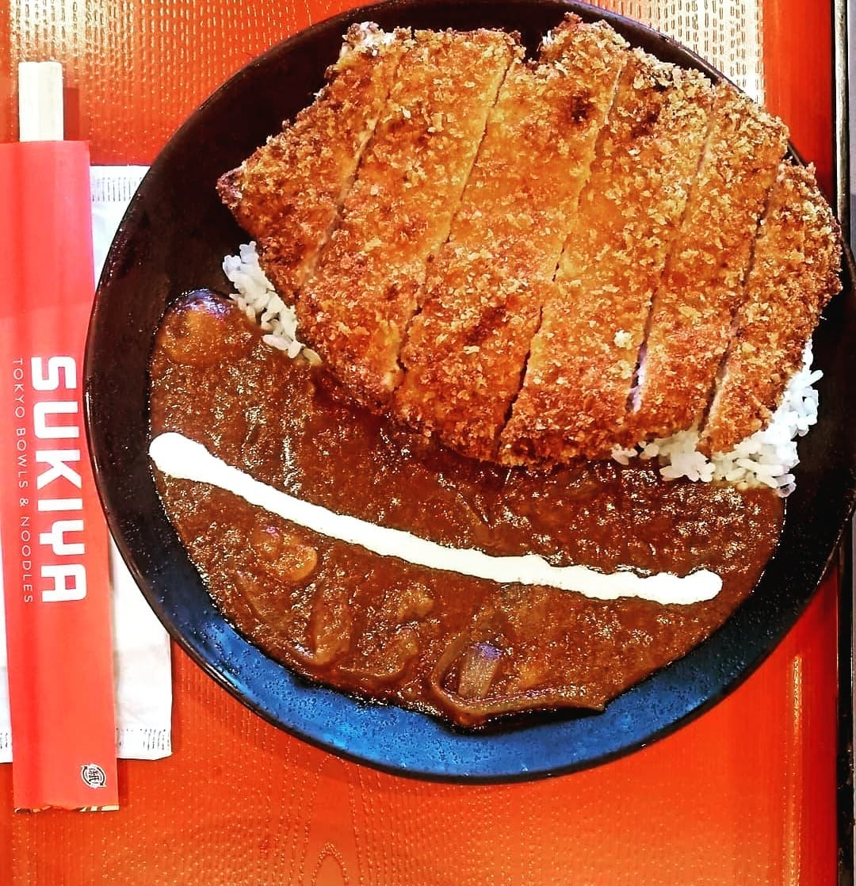
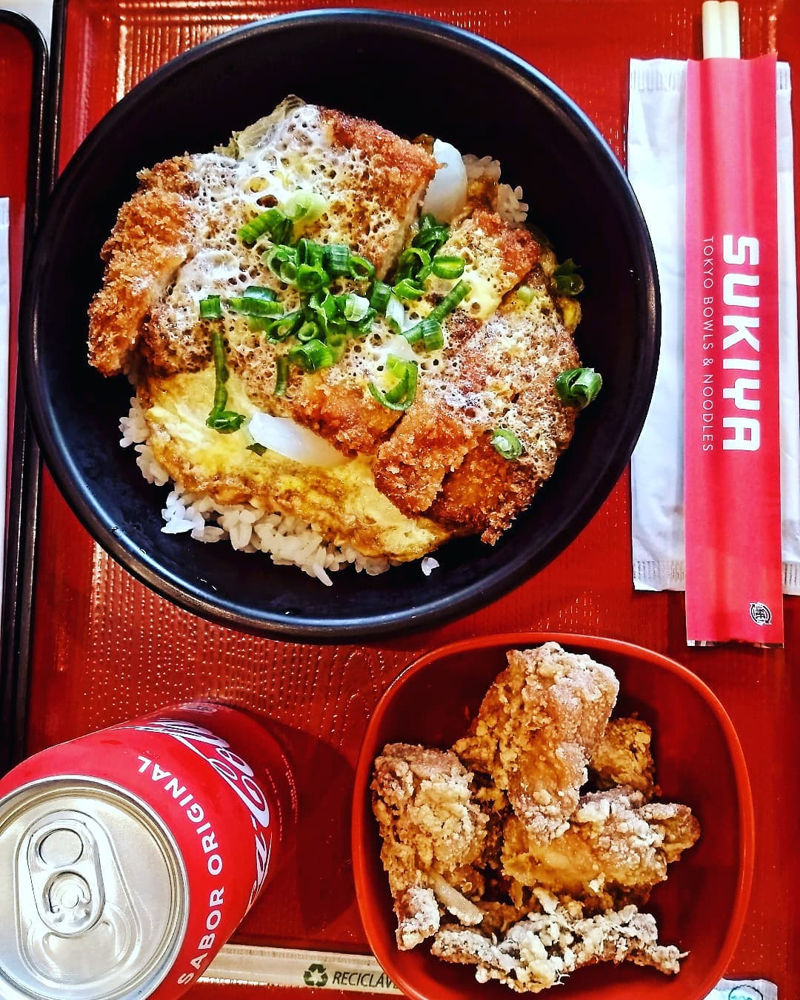
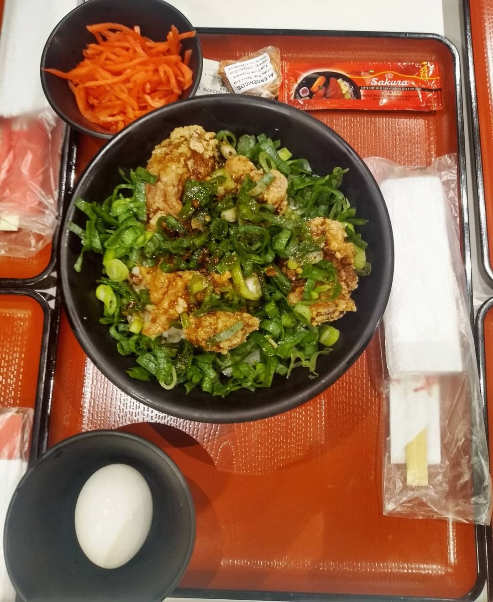

すき家
TOKYO BOWLS & NOODLES
CENTRO • SÃO BERNARDO DO CAMPO
ESPECIAL DE BALCÃO
KATSU CURRY
Lombo suíno crocante no panko, servido sobre arroz japonês quente e molho curry denso e aromático.
ROLE PARA TRANSFORMAR A CENA
ABERTO ATÉ 22:40
Almoço & Jantar
O JAPONÊS QUENTE, FARTURA PURA, DIRETO AO PONTO.
Nada de peixe cru ou rodízios demorados. No Sukiya São Bernardo, você come os autênticos Donburis e Ramens de Tóquio — servidos na temperatura certa, em porções generosas e em poucos minutos.
ENDEREÇO
Rua Marechal Deodoro, 605 — Centro
FAIXA MÉDIA
R$ 40 a R$ 60 por pessoa
Telefone direto: (11) 97658-0784